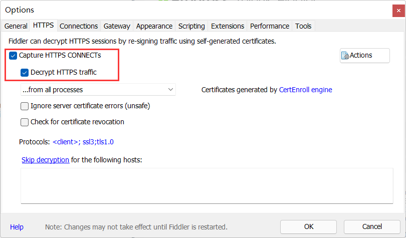

使用Fiddler在WSA(Windows安卓子系统)上抓包
使用Fiddler在WSA(Windows安卓子系统)上抓包。
为什么选择 WSA？
因为逆向分析的需要，很多逆向分析的工具都需要 Root 权限。使用 WSA 进行逆向分析的优势之一是摆脱了实体机的限制。在实体机上获取 Root 权限、安装 Xposed 框架都是比较困难的，会受到手机品牌厂商的限制。在 Android 手机越来越封闭的趋势下，连为发烧而生的 MIUI 也做出很多限制。在 MIUI 系统上解锁 Bootloader、获取 Root 权限需要获得内测资格，而获取内测资格需要给 MIUI 社区打工（每周提交 BUG），非常麻烦。
在虚拟机上进行逆向分析就会好很多，因为很多虚拟机一般都已经提供了 Root 权限。但是 Windows 平台的 X86 虚拟机一般不能运行只有 ARM ABI 的 APP（比如今日校园，在 x86 Android 上运行会闪退，因为它只提供了 ARM ABI）。为了解决这个问题，我只能在手机上创建 Android 虚拟机（VMOS Pro）来进行逆向分析。使用 WSA 进行逆向分析的第二个好处就是 WSA 可以将 ARM 指令转译为 x86 指令，从而能够运行这些只有 ARM ABI 的程序（而且效率不低，可以很流畅）。
此外，常用的虚拟机的 Android 版本都比较低，常见的 Android 版本有 Android 5 和 Android 7。这个目前没有造成什么影响，但是 APP 完全可以通过提高最低版本来增加逆向难度，比如限制只能在 Android 10 以及以上版本的系统上运行。而 WSA 的版本是 Android 11，是比较新的版本。刚好 Android 12 也已经推出了，后续还可能有机会升级到 Android 12

Fiddler 简要介绍
Fiddler Classic 是一个免费的 Windows 平台抓包软件，适用于抓取、分析 HTTP(S) 协议（但是不支持 HTTP/2）。
Fiddler 的原理是创建一个代理服务器，这样经过代理服务器的 HTTP(S) 协议数据包就都能被捕获了。对于 HTTPS 需要安装 Fiddler 的根证书，才能解密出原文。
说实话这个软件不是最好的软件，因为它还挺容易崩溃的。但是这个软件免费，而且用法简单。只要装上证书、设置好代理就能用。所以我常用来作快速分析。
在 WSA 上使用 Fiddler
这里 Fiddler 的下载和安装就不过多介绍了，都是一些基本操作。获取 Fiddler 的下载地址还需要提供一个邮箱，可以使用十分钟邮箱接收下载地址。
配置 Fiddler
在菜单栏点击 Tools/Options 打开 Fiddler 的设置页面。
按照如图所示，在 HTTPS 页面 勾选Capture HTTPS CONNECTS 和 Decrypt HTTPS traffic 启用 Fiddler 的解析 HTTPS 协议的功能。

另外在 Connections 页面 勾选 Allow remote computers to connect 以允许远程计算机连接 Fiddler 的代理服务器。
留意一下 Fiddler 代理的端口，后面要用到这个端口，一般来说默认是 8888。
配置 WSA
WSA 联网的原理和其他的虚拟机是一样的，都是通过一个“虚拟出来的 Wifi 连接”联网的。
因此只要给这个 Wifi 设置代理，就可以抓取所有 APP 的数据包了。
要打开 WSA 的 Wifi 设置页面，你可以用 ADB 指令：
1 | adb shell am start -n com.android.settings/com.android.settings.Settings |
也可以用一个比较受欢迎的工具箱 WSAToolBox。
然后如图修改 Wifi 的代理设置。代理的 IP 地址即网关的地址，端口即上面 Fiddler 设置页面显示的端口（默认为 8888）。

为了避免 Windows 程序的数据包刷屏，可以点一下 Fiddler 左下角的 Capturing，让它不再显示，这个开关不影响远程连接，只会不再捕获 Windows 程序的数据包。
抓取 HTTPS 包
至此，虽然可以通过 Fiddler 进行抓包，但是你的 App 很可能处于“断网状态”。而且 Fiddler 也无法看到数据包的明文。这是因为目前大多数 App 都已经通过 HTTPS 协议进行通讯。
HTTPS 的出现就是为了解决 HTTP 明文传输，容易被中间人查看、修改数据造成的信任问题，刚好 Fiddler 就是这样的中间人角色。
要让 Fiddler 能够看到 APP 发出的数据包的明文，需要安装 Fiddler 的根证书。
在高版本 Android 上安装根证书是比较麻烦的。在 Android 7 以下的版本，只需要在设置里安装一下就可以了。从 Android 7 开始，证书会被分为系统证书和用户证书，而且 App 默认是不信任用户安装的证书的。要把证书安装到系统证书，需要获得 /system 的读写权限，把证书写入到 /system/etc/security/cacerts 中。
网上有很多安装系统根证书的教程，但是可能不适用于 WSA(我试过一些教程，但是失败了)。所以我推荐一种新的方法，那就是使用 MagiskTrustUserCerts。这个 Magisk 模块会在每次开机时把用户证书移动到系统证书里。也就是说，使用这个模块之后，只需要安装用户证书，然后重启，用户证书就变成系统证书从而被所有 App 信任了。
安装 Magisk 和 LSPosed
这个部分的教程很可能会随着大佬对 WSA 的探索而更新，所以我不打算把它翻译到这里，读者可以在 MagiskOnWSA 找到如何将 Magisk 和 LSPosed 安装到 WSA。
在这之后，不要忘了安装上面提到的 MagiskTrustUserCerts 模块。
安装 Fiddler 根证书为系统证书
可以在 Windows 的浏览器里访问 http://127.0.0.1:8888 下载 Fiddler 的根证书，把它传输到 WSA里。
然后在 Android 设置页面 / 安全 / 加密与凭据 / 从SD卡安装 里安装 Fiddler 根证书。
重启 WSA 后，Fiddler 的根证书应该就被移动到 系统根证书里了。
解决 SSL Pinning
不少 APP 都使用了 SSL Pinning，也就是只信任自己设置的根证书，那么上面设置的系统根证书就对这个 APP 无效了。
要绕开这个限制，可以使用一个 Xposed 模块，JustTrustMe。
装好 JustTrustMe 后，在LSPosed 里启用它，就可以抓取大多数 APP 数据包并进行分析了。
最后
我对一些概念不是很了解，尤其是 HTTPS 和 SSL Pinning 相关的知识了解甚少。如果本文有什么错误或者细节需要补充，希望各位大佬指出。
编辑记录
2020-11-03: init
使用Fiddler在WSA(Windows安卓子系统)上抓包
https://uint128.com/2021/11/03/使用Fiddler在WSA-Windows安卓子系统-上抓包/